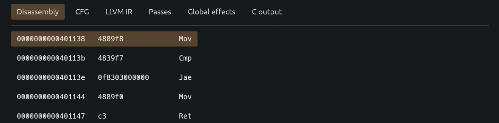
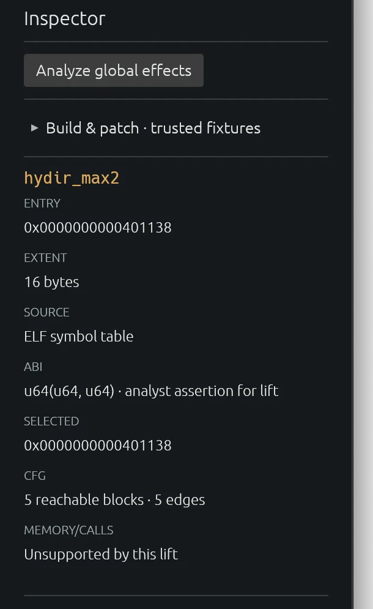
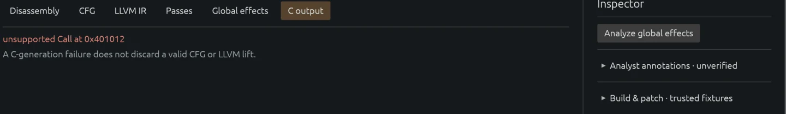

HydIR: a 16-byte lift
HydIR lifts a limited x86-64 ELF subset to LLVM IR and C. This example uses hydir_max2, a 16-byte function in the test fixtures. The ELF symbol supplies its entry and extent. --assume-u64x2 asserts a two-argument SysV AMD64 prototype; HydIR does not infer it.

The recovered CFG has five reachable blocks and five direct edges. Branch targets must stay inside the 16-byte extent and land on instruction boundaries. With no symbol table, the analyst must supply an entry address and size.

The lift
HydIR translates the accepted instructions into LLVM integer operations and condition checks. RDI and RSI hold the inputs; every return path must define RAX. Wrapping arithmetic is not marked nsw or nuw.
scripts/demo-local.sh builds the fixture, recovers its CFG, emits LLVM IR and C, and compares both outputs with native execution on 1,008 inputs. It runs LLVM's verifier when opt is installed. scripts/demo-corpus.sh adds 16 scalar functions. These are tests of the accepted subset, not an equivalence proof. Both scripts require Linux x86-64.
bash scripts/demo-local.sh
bash scripts/demo-corpus.shWhere it stops
Import, CFG recovery, LLVM lifting, and C generation can fail separately. Here, an unsupported call stops C generation. The CFG and LLVM lift remain available.

The function lift also rejects memory accesses, indirect edges, partial registers, unknown instructions, and uninitialized reads. Whole-program rebuilding has a separate contract. HydIR is not a general decompiler.